Carrés, cercles et trèfles
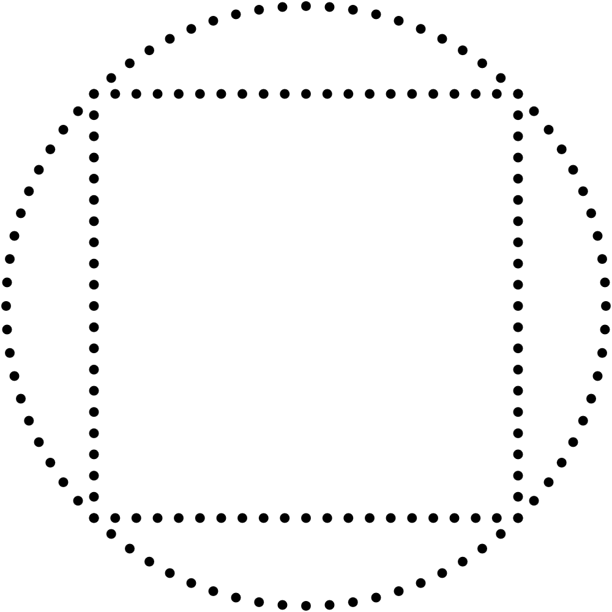ptimiser mes outils de dessin est toujours un plaisir. Ainsi, comme je dessine regulièrement des carrés en joignant 4 lignes formées par des points, je me suis dit qu’il était finalement temps de trouver une solution plus élégante. Je rêvais d’une simple équation paramétrique qui me permettrait de dessiner un carré complet d’un seul coup. J’ai cherché sur Internet et trouvé plusieurs solutions différentes, mais aucune ne m’a pleinement satisfait. J’ai d’abord considéré cette équation, que j’appelerai solution A. C’est l’équation polaire d’un polygone régulier à n côtés. Alors lorsque n=4, on obtient un carré.
J’ai ensuite considéré cette équation, que j’appelerai solution B. Elle est basée sur la courbe de Lamé.
Ces solutions sont excellentes mais elles ont l’inconvénient de distribuer les points de manière inégale le long des côtés du carré. L’effet est plutôt subtil avec la solution A et davantage visible avec la solution B. Il me fallait trouver une autre solution.
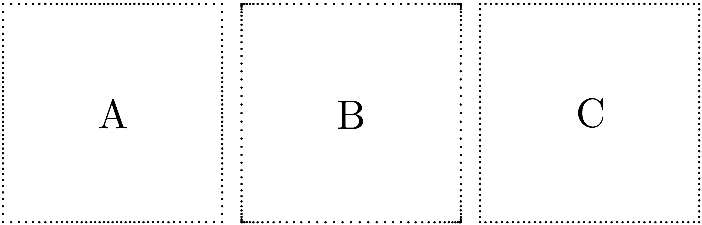Un carré qui se comporte comme un cercle
Je savais que je voulais un carré dont l’équation ressemblerait à celle du cercle unitaire, parce que je dessine souvent des cercles et des carrés qui sont connectés ensemble dans l’espace, et parce que je trouve que la façon typique de dessiner un cercle unitaire avec sin et cos est parfaite et élégante.
En bref, je voulais ceci :
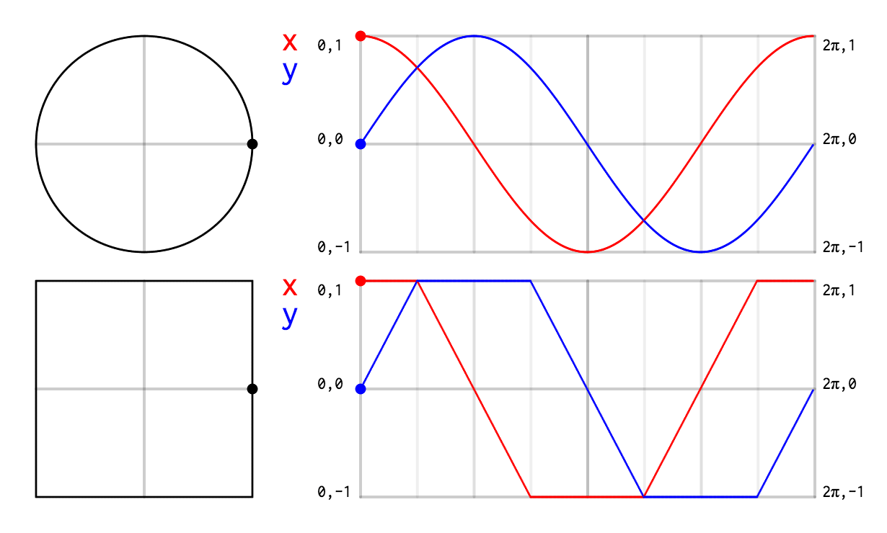J’ai d’abord dessiné sur papier les courbes exactes qu’il me fallait.
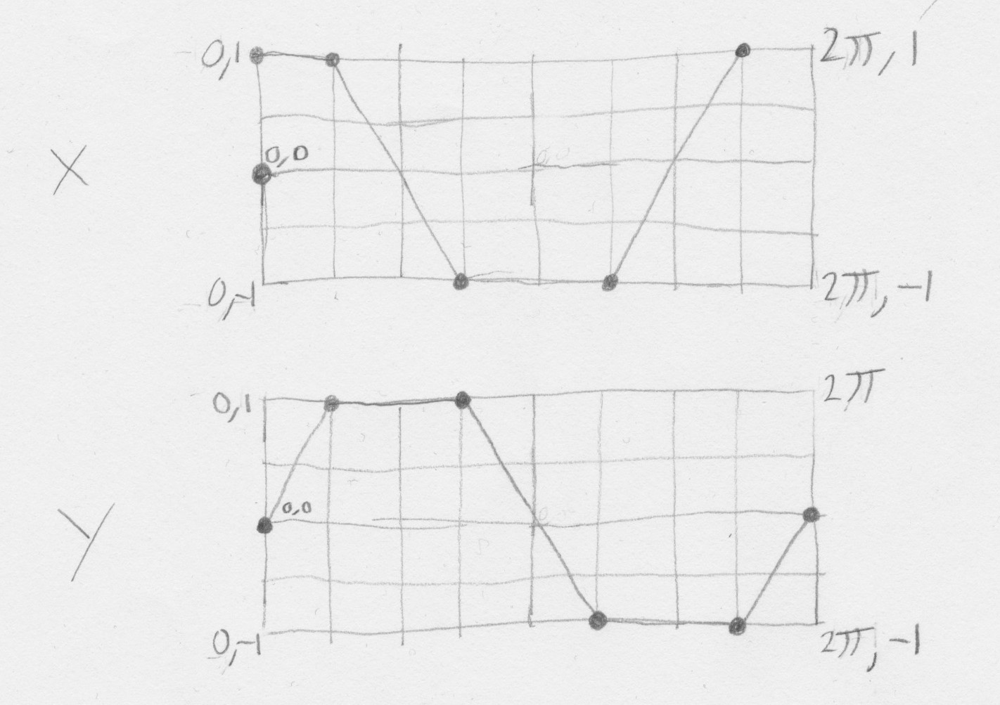J’ai ensuite utilisé une application de graphes (le logiciel Grapher qui est inclus gratuitement avec macOS) et j’ai écrit cette fonction par essais et erreurs.
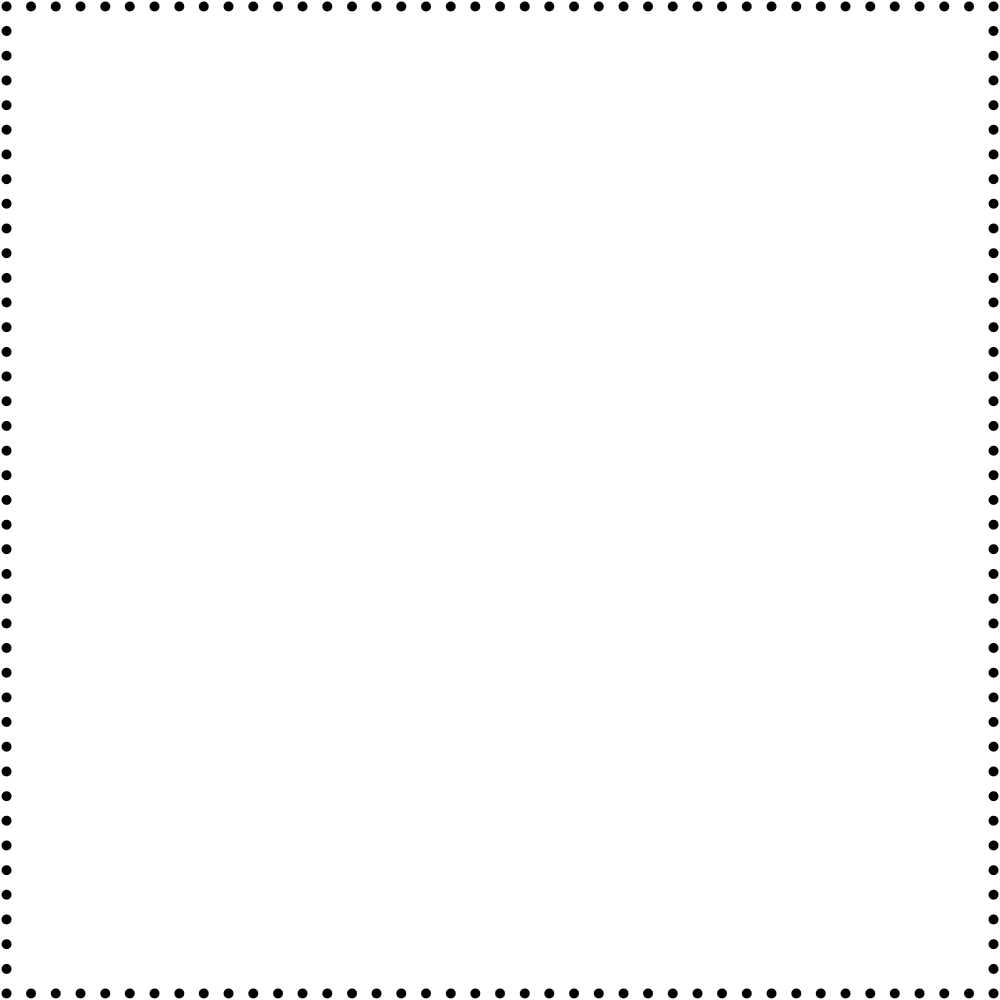
L’union mystique du carré et du cercle
Les connexions symboliques entre le carré et le cercle me trottaient dans la tête depuis ma lecture de Psychologie et alchimie de C. G. Jung. Le livre explique en détail la notion de la quadrature du cercle : « Le problème de la quadrature du cercle a préoccupé les esprits du Moyen Âge [...]. La quadrature du cercle est un symbole de l’opus alchymicum (œuvre alchimique), Pour expliquer rapidement, l’opus alchymicum est l’œuvre idéale qu’un alchimiste cherche à accomplir. Il peut s’agir de la transformation de substances ou d’une transformation personnelle comme l’acquisition de sagesse. en ce sens qu’elle décompose l’unité originelle chaotique pour la réduire aux quatre éléments, qu’elle recombine ensuite en une unité supérieure. L’unité est représentée par le cercle et les quatre éléments par le carré. » Psychologie et alchimie, page 184.
Pour illustrer cette quadrature du cercle, le livre présente cette gravure tirée du Viatorium Spagyricum (1625) de Herbrandt Jamsthaler. J’ai retrouvé cette image ici.
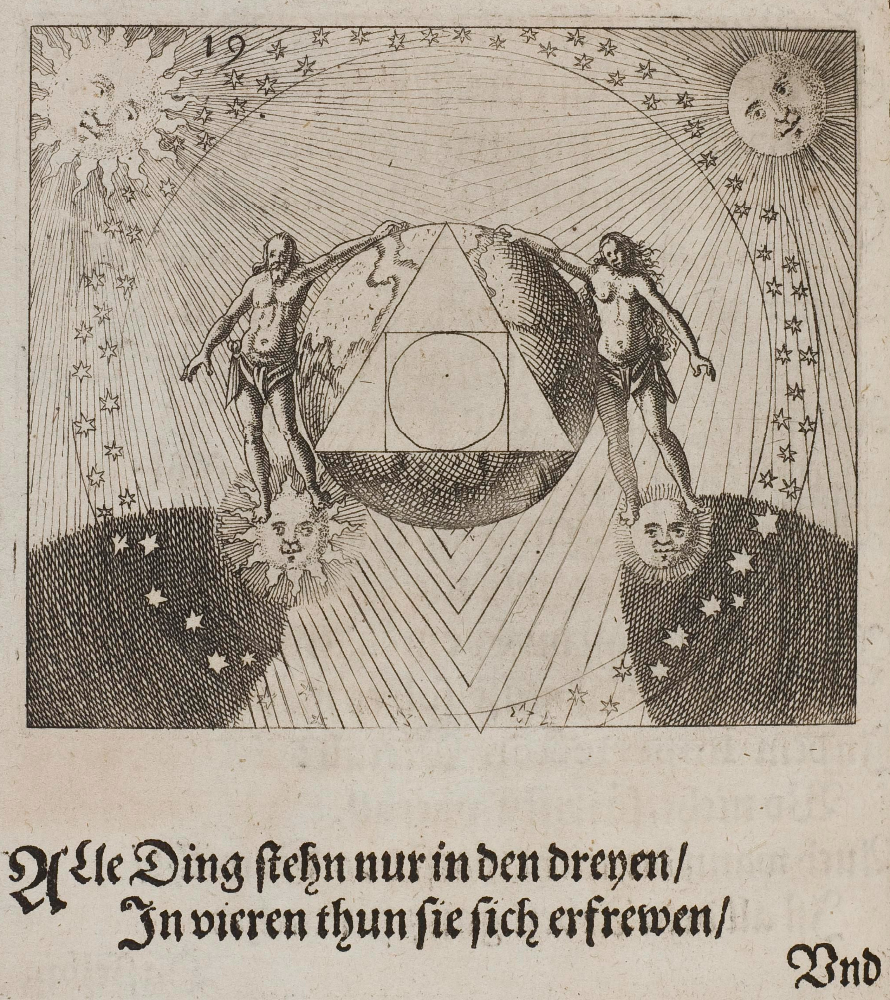
- — « Toutes choses ne font que vivre dans les trois /
Mais sont heureuses dans les quatre. / »
Géométrie alchimique maison
Une fois mon équation trouvée je me suis mis à explorer l’idée de l’union du carré et du cercle. Ma première idée (la plus évidente) a été de faire une interpolation linéaire entre les deux formes.
Ci-dessous, nous obtenons un carré lorsque l’interpolation est à 0 et un cercle lorsqu’elle est à 1. Entre 0 et 1, nous avons un mélange graduel des deux.
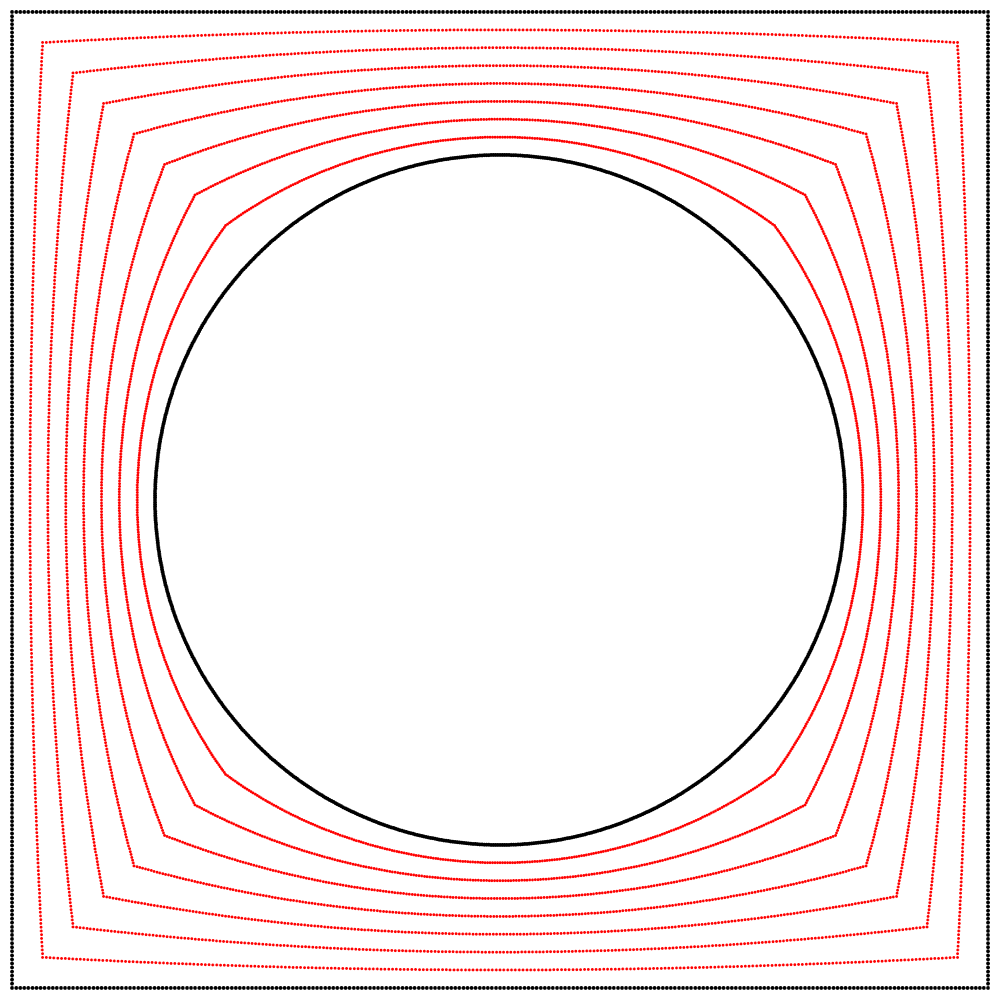
À la vue de cette image, je me suis demandé ce qui se passerait si l’interpolation allait plus loin que 1. Que verrait-on en allant à 2 ? Le résultat m’a surpris et enchanté : nous obtenons un trèfle à quatre feuilles. J’ai répété l’expérience avec les équations A, B et C, et j’ai ajouté des lignes et des points animés afin de montrer que le cercle se situe toujours exactement à mi-distance entre le carré et le trèfle.
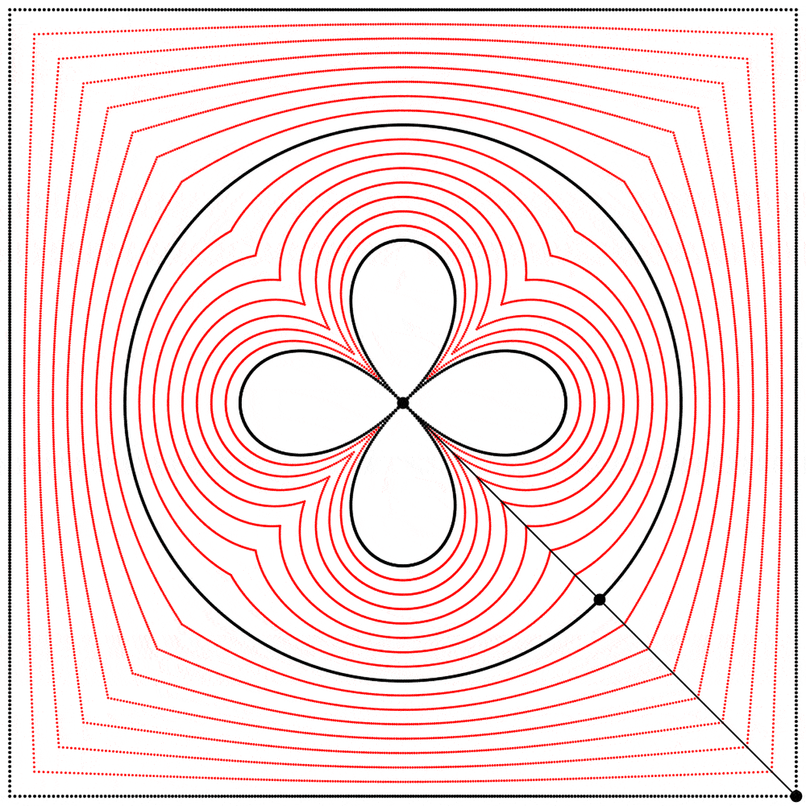 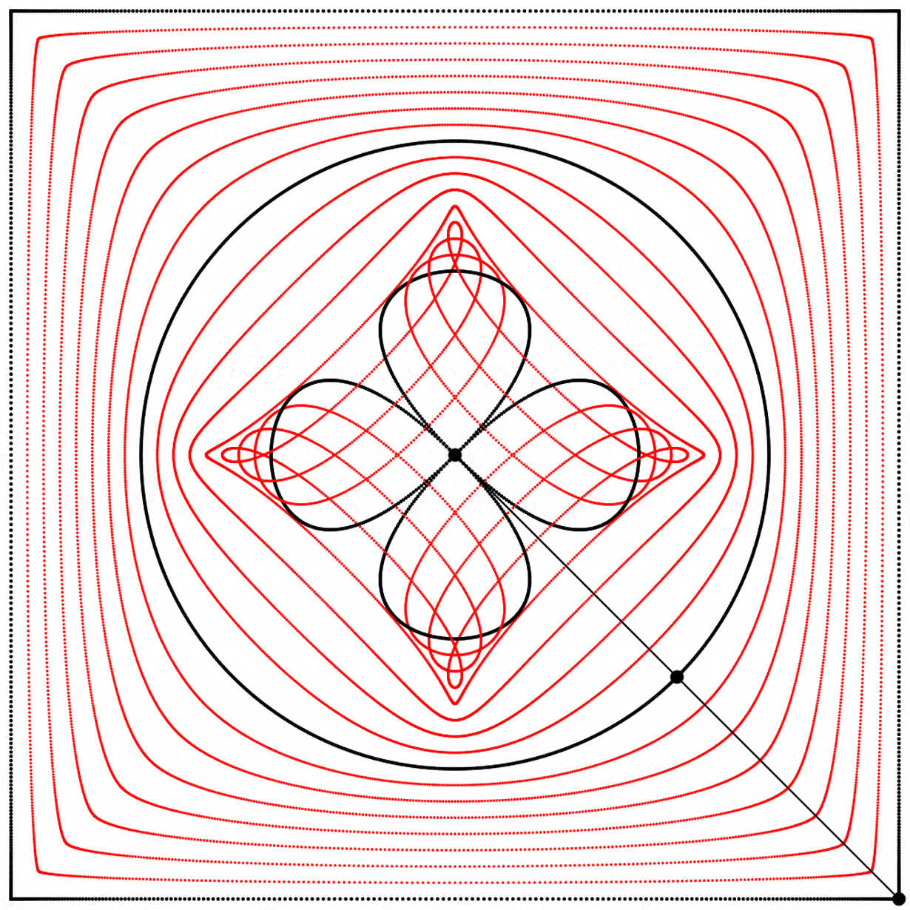 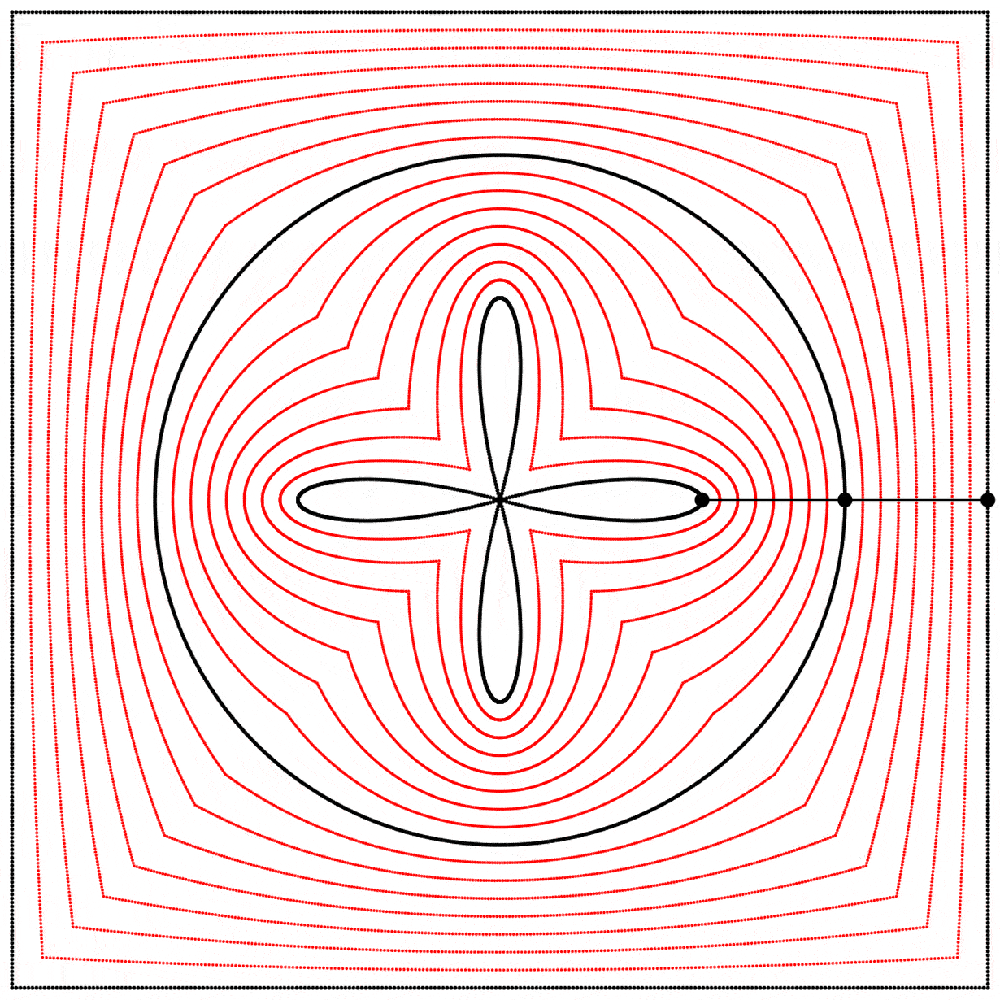
Chaque trèfle a une forme bien distincte, qui découle des différentes façons que nous avons de dessiner chaque carré. Ainsi les carrés, malgré qu’ils puissent sembler identiques lorsqu’ils sont dessinés avec assez de points, ont des comportements distincts.
Ces beaux trèfles m’ont inspiré une nouvelle visite d’un de mes sites Web préférés, L’encyclopédie des formes mathématiques remarquables. Le site a une excellente page sur le trèfle à quatre feuilles.
Conclusion
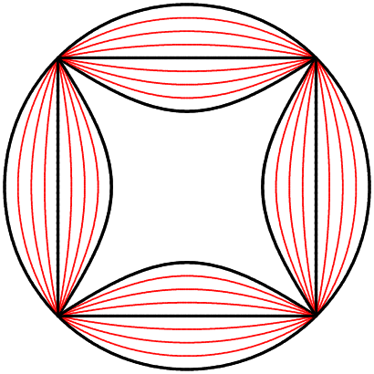ù nous mèneront ensuite ces belles équations paramétriques et cette quadrature du cercle ? Ces trèfles nous pousseront-ils à errer parmi quelques ruines gothiques ? Dans tous les cas, je suis déjà enchanté par ces premiers résultats. Si vous avez apprécié cet article, je vous invite à m’appuyer sur Patreon. Merci beaucoup pour votre lecture !
{kind=link}